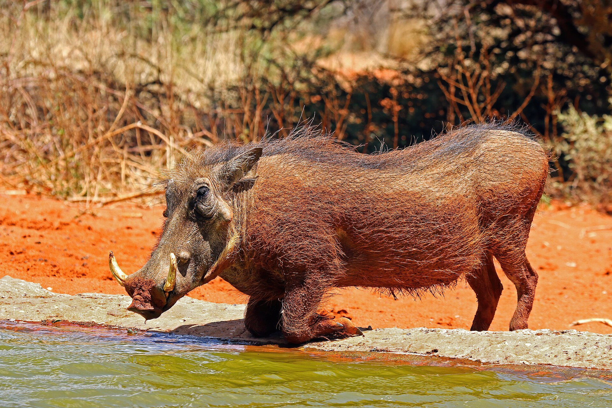
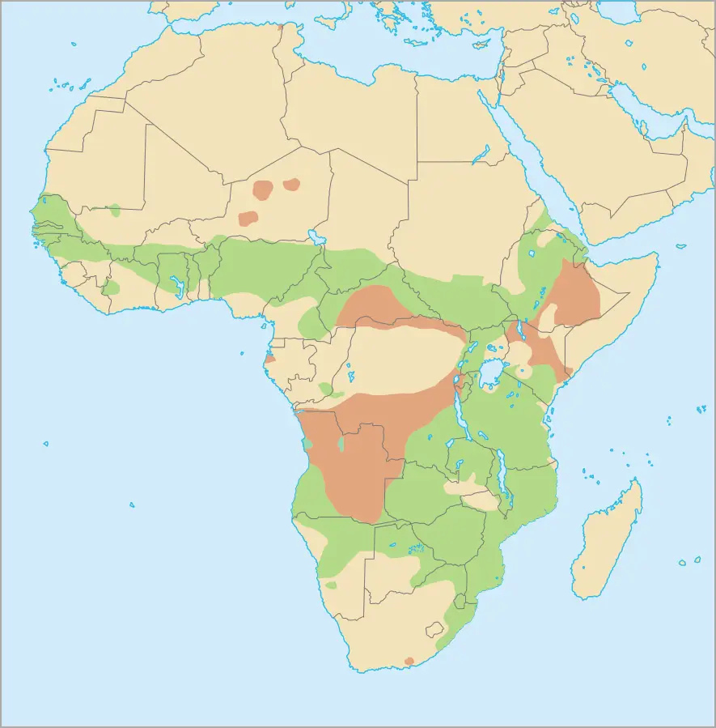
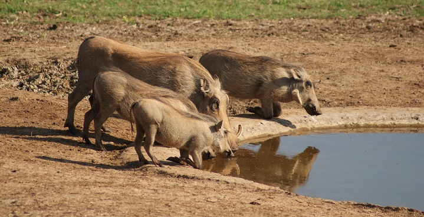

The Warthog
Status/Conservation
Currently, warthogs are listed as least concern on the IUCN Red List[1]
Full Scientific Classification
There are two warthog species, the widespread common warthog and the desert warthog.
Kingdom: Animalia
Phylum: Chordata
Class: Mammalia
Order: Artiodactyla; more recently Cetartiodactyla
Family: Suidae
Genus Species: Phacochoerus africanus
Physical Profile
Size: about 2.9 to 4.9 ft. in length.
Large tusks protruding from their snots.
They are typically dark gray, light gray, or black, but they often look reddish-brown.

Source: Wikipedia
Habitat & Geography
Warthogs are usually found in savanna grasslands, open bushlands, and woodlands. They are usually absent from forests, thickets, cool montane grasslands, and deserts.

Source: Animalia
Ecology & Behavior
Feeding & Diet:
Predominantly herbivorous diet of roots, bulbs, bark, grasses, berries, and other plants they also eat worms, insects, and carrion[2]
Behaviors and Adaptations:
Male warthogs usually travel alone, but they are also found traveling in groups called sounders[3]

Source: Something Over Tea
Communication:
They can communicate vocally by producing grunts and snorts.
Life History Cycle & Breeding Behaviors:
Life Span: Over 18 years.
Predators:
Hunted by predators such as lions, cheetahs, leopards, wild dogs, or hyenas.